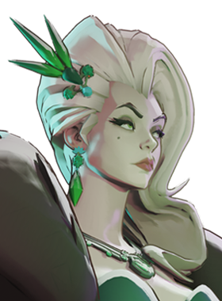

Mobilidade vertical e iniciações de impacto.
História
Jacob Lash é um idiota.
História oficial do jogo, traduzida automaticamente para o português.
Números reais
Habilidades

Pisoteia o chão ferindo inimigos num cone à frente e mergulha em direção ao chão se usado no ar.

Puxa Lash pelo ar até um alvo e restaura seus pulos aéreos e dashes.

Chicoteia inimigos à frente e se cura com parte do dano causado.

Prende chicotes em inimigos durante um canal e então os ergue, atordoa e esmaga no chão.
Builds mais usadas
4.927 partidas registradas com esta build.
🏆 Reforço de tiro na cabeça (800) · 🏆 Explosão Mística (800) · 🏆 Espírito Extra (800) · 🏆 Frente Fria (1.600) · 🏆 Colecionador de Troféus (1.600) · 🏆 Espírito Melhorado (1.600) · 🏆 Taxa Extra (800) · 🏆 Tiro Místico (1.600) · 🏆 Vigor Extra (800) · 🏆 Maestria de Vigor (3.200)
4.511 partidas registradas com esta build.
Reforço de tiro na cabeça (800) · Explosão Mística (800) · Recarga Mercúrio (1.600) · Taxa Extra (800) · Espírito Melhorado (1.600) · Frente Fria (1.600) · Vigor Extra (800) · Expansão Mística (800) · Emblema do Encantador (1.600) · Maestria de Vigor (3.200)
4.301 partidas registradas com esta build.
Reforço de tiro na cabeça (800) · Explosão Mística (800) · Espírito Extra (800) · Taxa Extra (800) · Expansão Mística (800) · Frente Fria (1.600) · Colecionador de Troféus (1.600) · Tiro Místico (1.600) · Maestria de Vigor (3.200) · Salto Majestoso (3.200)
Confrontos reais
 Deadman Danny — 59.7% de vitória
Deadman Danny — 59.7% de vitória Mirage — 57.0% de vitória
Mirage — 57.0% de vitória Solomon — 56.4% de vitória
Solomon — 56.4% de vitória Violet — 56.4% de vitória
Violet — 56.4% de vitória Shiv — 56.1% de vitória
Shiv — 56.1% de vitória Pocket — 55.4% de vitória
Pocket — 55.4% de vitória
 Rat King — 42.3% de vitória
Rat King — 42.3% de vitória Graves — 44.9% de vitória
Graves — 44.9% de vitória Paige — 45.4% de vitória
Paige — 45.4% de vitória Seven — 45.8% de vitória
Seven — 45.8% de vitória Victor — 46.0% de vitória
Victor — 46.0% de vitória Kelvin — 46.2% de vitória
Kelvin — 46.2% de vitória
O que upar primeiro
Nível por nível, na ordem que os jogadores mais usam em partidas de verdade. A porcentagem mostra quantos escolheram aquela habilidade naquele nível.
Melhores duplas
Heróis que mais ganham jogando junto com ele, em partidas reais (pelo menos 1.500 partidas juntos).
- Rat King58,6%
- Graves58,4%
- Paige57,2%
- Seven56,9%
- Victor56,0%
- Deadman Danny42,5%
- Mirage44,3%
- Pocket45,5%
Rota (lane)
Na rota, cada lado joga em dupla. Estes números são de confrontos reais: a diferença de almas é medida com o jogo já começado, então almas no verde significa que ele costuma estar na frente.
- Rat King — 40,7% de vitória −536 almas (2.055 partidas)
- Paige — 43,3% de vitória −68 almas (436 partidas)
- Graves — 45,1% de vitória +194 almas (384 partidas)
 Baba — 47,3% de vitória +382 almas (427 partidas)
Baba — 47,3% de vitória +382 almas (427 partidas) Haze — 48,0% de vitória −375 almas (8.261 partidas)
Haze — 48,0% de vitória −375 almas (8.261 partidas)- Seven — 48,0% de vitória +145 almas (845 partidas)
- Victor — 48,1% de vitória −332 almas (351 partidas)

Lady Geist — 48,8% de vitória +134 almas (244 partidas)
 Rem — 59,3% de vitória −36 almas (1.115 partidas)
Rem — 59,3% de vitória −36 almas (1.115 partidas)- Pocket — 58,3% de vitória −1.414 almas (180 partidas)
- Shiv — 57,8% de vitória +283 almas (1.117 partidas)
Histórico de win rate
07/09: 50.8% → 26/10: 50.2% → 14/12: 52.5% → 01/02: 53.2% → 22/03: 49.8% → 10/05: 50.5% → 28/06: 51.5% → 16/08: 51.7% → 04/10: 51.2%